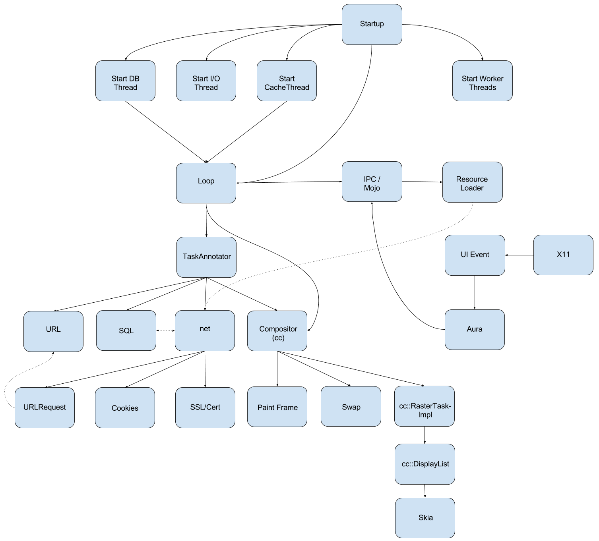

Browser process - detailed architecture overview

Startup
This is the entry point of the whole application (Main).
Main launches ContentMain and BrowserMain
BrowserMain starts the MainMessageLoop
Threads
Right after the startup the required threads are started
I/O thread
communication with the renderer task
DB thread
sqlite database connection and queries
Cache thread
cache store / retrieve
Worker threads
this is a facility that runs tasks that don't require a specific thread or a message loop
there is a thread pool called WorkerPool, which dynamically adds threads (if necessary) to handle all tasks
there are different implementations for POSIX and non-POSIX based systems
Loop
MainMessageLoop
is used to process events for a particular thread
puts the incoming messages, tasks to a queue
pops a task from the queue and starts it
strong relationship with the IPC communication framework
has task reentrancy protection
second task cannot be started until first task finishes
IPC / Mojo
framework which is used for inter-process communication
connects directly to the MainMessageLoop
provides communication channels through which the messages can be sent
message creating, sending and receiving
asynchronous message handling
TaskAnnotator
all incoming tasks are going through a TaskAnnotator which annotates the task before the execution
implements common debug annotations for posted tasks. This includes data such as task origins, queueing durations and memory usage
runs a previously queued task
ResourceLoader
browser side of the resource dispatcher
receives requests from the child processes (Renderer, Worker, etc)
dispatches the received requests to URLRequests
forwards the messages from the URLRequests back to the correct process for handling
URL
this group contains all the URL-relevant features
URL replacing and URL extension
URL autocomplete
extracting search terms from URL
URL parsing
URL canonicalization (picking the best URL, when there are multiple choices)
connection to
Omnibox
(Chromium’s “smart” URL bar)
SQL
classes which communicate with the sqlite3 database
load / update url autocomplete predictions from database
load saved favicons
net
NetworkDelegate
performs actions before the
URLRequest
starts
starts
URLRequests
handles
Cookies
loads all Cookies for a given URL async
sets all Cookies for the given URL
SSL Cert
handles SSL related actions
SSL handshake
certification verifying
signature verifying
Compositor (cc)
PaintFrame
painting main frame
prepare tiles
update layers
update picture layer
update display list
paint to display list
Aura’s painting is called
paint Tabs
Swap
draw to a specified surface
swap buffers
RasterTask
task, which performs rasterization
tasks are represented as a task graph
edges: dependencies
node: tasks, priority is assigned to them
items in the display list are drawn to the surface
the rasterization calls specific
Skia
functions in order to get the canvas drawn correctly
drawColor, drawPicture, drawRect, fillRect, etc.
X11/Windows/Mac
captures mouse, key, (etc) events and passes it to Chromium
UIEvent
classes in views and ui namespaces deal with all UI related functionalities
one of their important duties is handling UI events, for example mousemove, mouseclick, keypress, etc.
these events are passed forward from the system's Windowing library
the events are passed through an event handling chain in order to perform certain actions in each step
if the user enters the URL into the URLBar, these classes perform the character insertion into the URLBar’s text field.
Aura
UI framework, desktop window manager and shell environment
cross platform
Chrome OS uses it as well as Chrome / Chromium
Aura provides Window and Event types, as well as a set of interfaces to customize their behavior
Sources
https://www.chromium.org/developers/design-documents/aura/aura-overview
https://code.google.com/p/chromium/codesearch#chromium/src/base/threading/worker_pool_posix.h
https://code.google.com/p/chromium/codesearch#chromium/src/base/message_loop/message_loop.h
https://code.google.com/p/chromium/codesearch#chromium/src/content/browser/loader/resource_dispatcher_host_impl.h
https://www.mattcutts.com/blog/seo-advice-url-canonicalization/
https://code.google.com/p/chromium/codesearch#chromium/src/base/debug/task_annotator.h&q=task_annotator&sq=package:chromium&type=cs&l=1
https://code.google.com/p/chromium/codesearch#chromium/src/cc/raster/task_graph_runner.h&q=taskgraph&sq=package:chromium&type=cs&l=42
https://code.google.com/p/chromium/codesearch#chromium/src/base/threading/worker_pool.h&q=worker_pool.h&sq=package:chromium&l=1